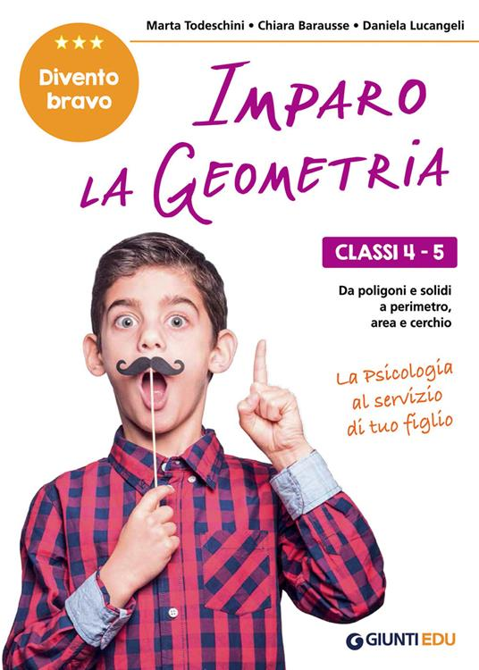
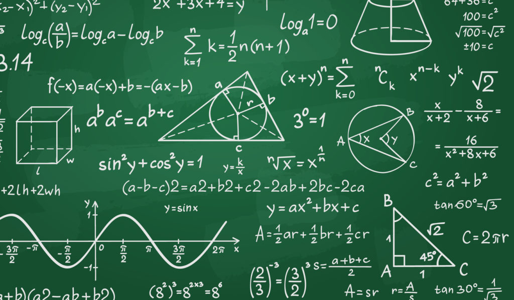

Libri

Matematica a 360°
"Matematica a 360°" è il libro ideale per gli studenti delle scuole elementari. Con spiegazioni chiare, esercizi pratici e colorate illustrazioni, rende l'apprendimento della matematica divertente e coinvolgente. Perfetto per costruire una solida base matematica in modo semplice e stimolante.
Libri
Imparo la geometria
"Imparo la geometria" è il libro ideale per gli studenti delle scuole elementari. Con spiegazioni chiare, esercizi pratici e vivaci illustrazioni, rende l'apprendimento della geometria facile e divertente. Perfetto per sviluppare una solida comprensione dei concetti geometrici fondamentali.
Articoli
L'importanza della matematica
Tizio Incognito spiega come la matematica supporta la scienza e sviluppa il pensiero logico. Con esempi chiari e applicazioni pratiche, rende evidente il ruolo cruciale della matematica nella comprensione del mondo e nella risoluzione dei problemi.
VisualizzaArticoli
Storia della Geometria
Lionel Hutz ci racconta attraverso racconti affascinanti e illustrazioni vivaci, come le scoperte geometriche abbiano modellato il nostro mondo e influenzato il pensiero scientifico e matematico durante i secoli, dalle basi gettate dagli antichi egizi alla Geometria Computazionale dei giorni nostri.
VisualizzaMatematica dei greci
Unisciti a Lionel Hutz mentre ci racconta come le scoperte matematiche dei Greci abbiano gettato le basi della matematica moderna. Esploreremo il lavoro di grandi matematici come Pitagora, Euclide e Archimede, analizzando i teoremi e i principi geometrici e le loro applicazioni pratiche nell'antichità.
Un viaggio tra i numeri
Barney Gumble ci spiega i concetti fondamentali dei numeri e del calcolo. Partendo dai numeri interi e decimali, passando per le frazioni e i numeri razionali, fino ad arrivare ai numeri irrazionali e complessi. Infine verranno approfondite le operazioni aritmetiche di base come addizione, sottrazione, moltiplicazione e divisione.